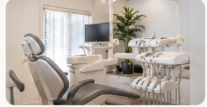

Diş fırçalama ve günlük ağız bakımı
Dişleri ne sıklıkla ve nasıl fırçalamalı? Florür ve diş arası temizliği hakkında temel bilgiler.
Makaleyi oku ↗

2007 yılında Yeditepe Üniversitesi Diş Hekimliği Fakültesinden mezun oldu. Mesleki ilgi alanları arasında implantoloji, protetik tedaviler ve estetik uygulamalar yer alır.
Daha Fazla Bilgi →Günlük bakım, koruyucu yaklaşımlar ve muayenehane bilgileri hakkında genel bilgilere ulaşın.
Muayenehane Bilgileri →
Günlük ağız bakımına ilişkin bilgilendirici yazılar.
Dişleri ne sıklıkla ve nasıl fırçalamalı? Florür ve diş arası temizliği hakkında temel bilgiler.
Makaleyi oku ↗Diş eti kanaması neden oluşabilir, hangi belirtiler önemlidir ve günlük bakım nasıl yapılır?
Makaleyi oku ↗Diş çürüğünün oluşumu, florürün önemi ve beslenme alışkanlıklarının etkisi.
Makaleyi oku ↗